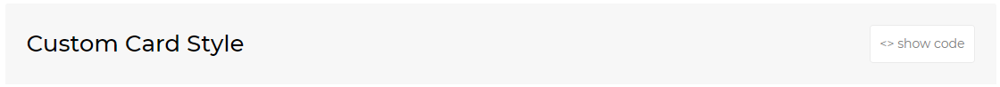

Thank you for purchasing Corporex template!
This documentation will give you an understanding of how Corporex is structured and guide you in performing common functions. If you require further assistance not covered in this documentation, please contact me at hello@iamabdus.com
Thank you so much!
You will see the following folder structure. If you want to build simple HTML and CSS based website, please use Static HTML version. Dev Environment folder contains SCSS files if you want to use Sass as a css preprocessor to build your app.
Corporex template is based on Bootstrap Framework (version: 4) (https://getbootstrap.com/) Bootstrap is the most popular HTML, CSS, and JS framework for developing responsive, mobile first projects on the web.
Below is a sample coding structure:
<!DOCTYPE html>
<html lang="en-US">
<head>
</head>
<body id="body" class="">
<header class="header">
...
</header>
<div class="main-wrapper">
<div class="section-name">
<div class="container">
...
</div>
</div>
<footer>
...
</footer>
</div>
</body>
</html>
If you wish to add/change the site's fonts, please take a look in the style.css file of the website and replace this line
/* GOOGLE FONT */
@import url('https://fonts.googleapis.com/css?family=Open+Sans:400,600,700,800|Poppins:400,500,600,700,800|Roboto:100,300,400,500,700,900|Titillium+Web:300,400,600,700,900');
after importing font's url in the css file you need to change the font-family property of the elements. Corporex uses two different font family. To change the default fonts go to css file and change the font-family of the elements as shown
/* body element */
body {
font-family: 'Open Sans', sans-serif;
}
Corporex has both fixed and Static header.
Default Header is fixed.
For static header you need to add following class in the <body>
<body class="static">
Corporex supports two different layout modes, Wide & Boxed Layout mode.
This is the default option. No need to add extra class to the <body>
<body class="">
<body> and layout style will be changed to boxed version.
<body class="boxed">
There are five different patterns available in Corporex template with the classnames "default", "pattern-01", "pattern-02", "pattern-03" & "pattern-04".
To use pattern background in the Boxed version, add any of the above classnames with the <body> like this:
<body class="boxed pattern-01">
This part of the documentation will help you to customize preloader
In the <body> tag you can find preloader mark-up. You can apply any custom styles of preloader as you want by customizing css in style.css. You can also use gif images.
Follow the steps below to apply preloader
Step-1: Add preloader markup.
<div id="preloader" class="loader-wrapper">
<div>
</div>
Step-2: Copy the following javascript code in custom.js
$(window).on('load', function () {
$('#preloader').fadeOut(300);
});
This will add a class loaded in the <body> element after the loader finishes loading. By default loader time is set for 3 seconds, you can increase or decrease it in the function above.
Step-3: body containes some style properties until the preloader loads. You need to overwrite the properties when the loaded class added. Copy the following css and paste it in style.css
#preloader {
/* Apply any css style properties for loader. */
}
This part of the documentation will explain how to change the current Color Scheme of your site, You simply need to include an existing color scheme or change the HEX Color Code in the css/default.css and include inside <head>
<head>
<link rel="stylesheet" href="css/default.css" id="option_color">
</head>
To change default color, go to this foldercss/default.css and open default.css.Change the HEX Color Code whatever you want like: color: #ec5598;
You will find 4 more existing color schemes in css directory. To use them just replace css/default.css with css/color-option1.css or css/color-option2.css or css/color-option3.css or css/color-option4.css inside <head>.
You can use all available color options in the same way shown below:
<head>
<link rel="stylesheet" href="css/color-option2.css" id="option_color">
</head>
To customize map colors, roads, labels etc. go to https://mapstyle.withgoogle.com/ and click CREATE A STYLE button. Select any theme and modify based on your requrement then click FINISH button. Copy the JSON data and replace the value of var mapStyles in your custom.js file in the js folder with the JSON you copied earlier.
Corporex includes 20+ elements.
These elements are the basic building blocks of the template as Corporex also created using these elements.
<>show code button right side of each elements title.

Step-1: Download Node.js and install into your computer.
Step-2: Open terminal in the project root directory.
Step-3: Then run the following command accordingly into terminal:
//install gulp-cli globally
$ npm install gulp-cli -g
//install devDependencies
$ npm install
//run project
$ gulp
- this will fire default gulp task which includes: launching BrowserSync, build all html files, javascript minification, sass compilation and lanching watch task. BrowserSync will create dev server and sync your browser with your code editor.
| Folder / File name | Description |
|---|---|
| Main folder | Folder contains _reset.scss and _common.scss files. Most basic styles and commonly used classes. Also container all pages scss files |
| partials folder | This folder contains helper Sass files namely: _variables.scss, _mixins.scss, _media-query.scss. |
| elements folder | All elements used accross the template and their styles scss are placed in this folter |
| style.scss | Main Sass file that imports all other files and is compiled to style.min.css. |
Step 1: Installation - The first step is to download, install and launch Koala. This is what you should see the first time you launch Koala.
Step 2: Adding a project - Now all you have to do is locate your Sass project folder, and drag it into the window. Koala will then list every Sass file it can find.
Step 3: Compiling - Now all you have to do is select any listed Sass file and press compile. Koala will then compile your file and produce a normal CSS file using the same name. That’s it! No complications. No typing commands in a console. Just drag, select and click.
Conclusion - There are many other Sass compilers out there, some even more powerful and many times faster. Unfortunately many of these are either paid or are non GUI based. They are neither straight forward nor user friendly to Sass newbies. If you are new to Sass, you should try Koala first then the rest later. But I must warn you, once you go Koala there is no going back.